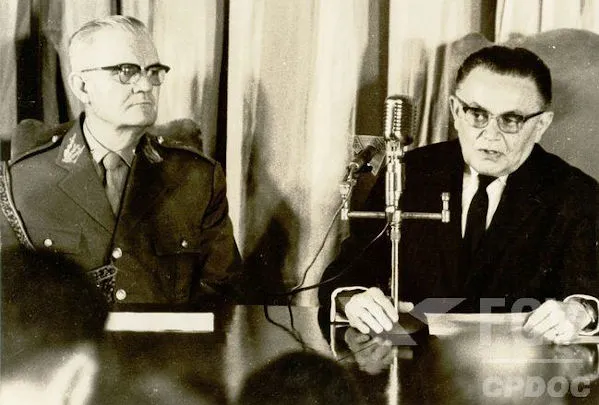

Por que AI?
Os AIs(Atos institucionais), foram criados no governo de Humberto Castelo
Branco para serem uma forma mais fácil do governo militar impor leis,
mesmo que fossem contra a constituição.
AI-1:
Decretado em 9 de abril de 1964, o AI-1 foi o primeiro Ato institucional
criado na ditadura militar. Estes são os principais artigos: (Não coloquei
todos porque são muitos)
-
A Constituição de 1946 ainda seria válida, mas poderia ser modificada
pelos militares.
-
O presidente da República poderia ter poderes acima das limitações da
Constituição.
-
Os militares poderiam suspender os direitos políticos de qualquer pessoa
por 10 anos, sem processo judicial.
-
A eleição para presidente tornou-se indireta (o povo não podia mais
votar para presidente).
- O governo poderia suspender garantias da Constituição.
-
Civis ou militares que eram servidores públicos poderiam ser demitidos
por serem considerados “inconvenientes”.
AI-2:
O segundo Ato Institucional foi decretado em 27 de outubro de 1965. Os
principais artigos são:
- Proibição de todos os partidos brasileiros
- Só foi permitida a existência de dois partidos(MDB e ARENA)
- Composição de 16 ministros no STF
-
A justiça militar pode processar e julgar crimes contra a segurança
nacional
-
O presidente da república poderá decretar estado de sítio, independente
da autorização do congresso por 180 dias.
- O Presidente poderá suspender direitos políticos por 10 anos
- O presidente poderá reorganizar o sistema judiciário
AI-3:
O terceiro Ato Institucional foi decretado em 5 de fevereiro de 1966. Os
principais artigos são:
- Governadores eram escolhidos pelo governo.
- Prefeitos de capitais eram escolhidos pelos governadores.
-
O governo poderia adicionar regras para controlar as eleições municipais
e estaduais.
-
Se algum governador burlar essas regras, o presidente da república
poderia tirar o governador do cargo.
AI-4:
O quarto Ato Institucional foi decretado em 7 de dezembro de 1966. Os
principais artigos são:
- O congresso nacional foi reunido em uma assembleia constituinte.
-
A nova constituição permitia o governo aprovar toda lei que eles
quisessem.
-
O congresso deixaria de ser constituinte e se transformaria em normal,
mas ainda sob controle da ditadura.
- Igual todos os AIs, o AI-4 foi aprovado sem votação.
